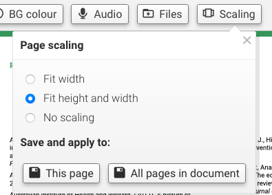
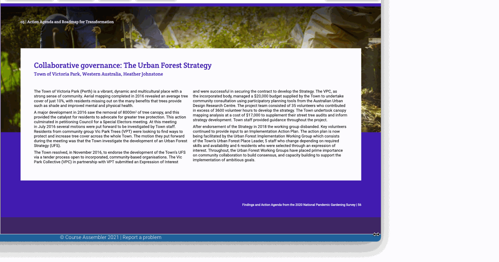

You can now choose which scaling mode the page should use, and optionally apply it to all the pages in the document that was split. For instance you can fit a presentation-style page to the viewport so that no scrollbars are required irrespecitive of the viewport dimensions.
